Full-Body Suite#
The full-body suite records one take of ten standing poses and motions, then checks the
core.FullBodyPoseRecord stream in it: the 24-joint skeleton of the OpenXR
XR_BD_body_tracking extension, pelvis to hands, in the joint order listed in
Body Tracking.
PICO body tracking is the default source (
body.pico-xr). Set up, calibrate and activate the headset and Motion Trackers as described in Body Tracking.Your own suit or mocap system records through a vendor backend and its plugin (Vendor Selection). The backend must publish those 24 indices right-handed, +Y up, in metres, with the subject facing −Z (oracle/README.md). A CloudXR headset must stay connected for the OpenXR session, but it needs no body tracking.
Steps |
10, standing: four held poses and six motions |
Time |
About 1.5 minutes, plus the time you take to get into each pose |
How each step runs#

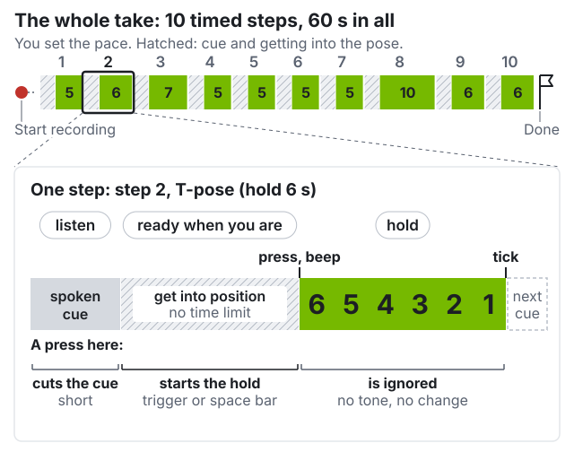
Audio is optional. The capture panel shows each cue as text. To hear the cues, connect speakers to the workstation; they do not play in the headset.
Once the capture panel reads ready when you are, press the controller trigger, or space in the capture panel’s browser tab (not the terminal).
A press at any other moment is ignored on purpose: no reaction, nothing queued.
A press during the cue cuts the cue short. Press again when you are ready.
Held poses (steps 1–3, 10): get into the pose, then press. Motions (4–9): press, then move.
Held-pose measurements use the last 60% of the window, so settle early.
The ten steps#
In each motion step, the step’s main joint must swing at least 15°
(segmentation.). Checks marked measured only report a
number; they do not decide the verdict.
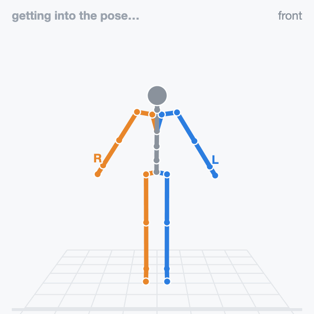
hold 5 s “Arms down. Stand still.”
Feet hip-width apart, arms straight and angled down away from your sides, eyes ahead. Stay still until the tick.
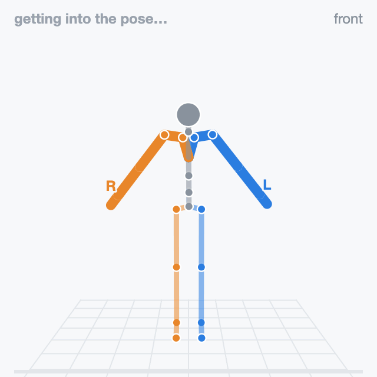
hold 6 s “T pose. Hold.”
Both arms straight out to the sides, level with the floor, palms down. Hold still.
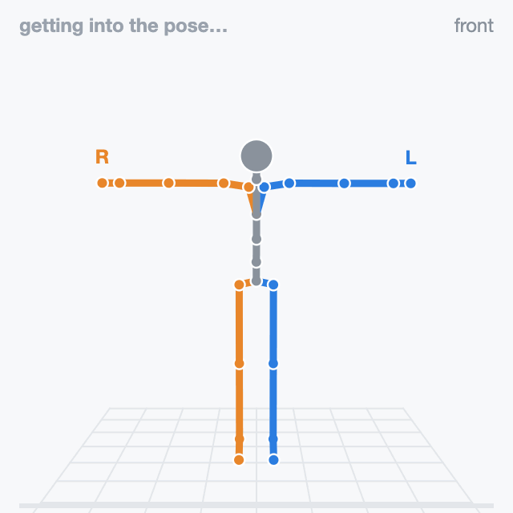
hold 7 s “Arms down. Relax.”
Lower your arms from the T-pose and stand relaxed and still.
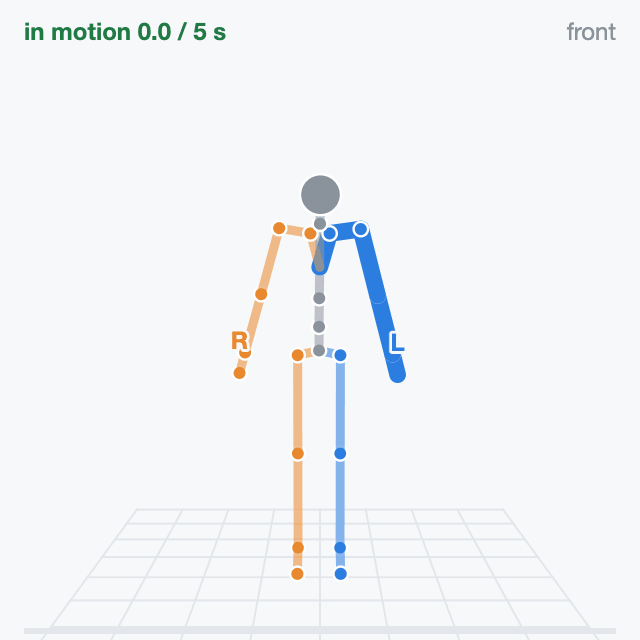
move 5 s “Left arm up, overhead.”
After the press, raise your straight left arm sideways to overhead and lower it. Stay upright.
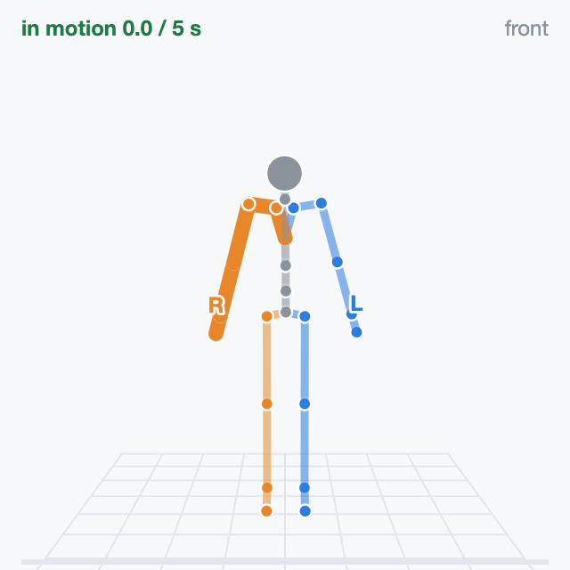
move 5 s “Right arm up, overhead.”
After the press, raise your straight right arm sideways to overhead and lower it. Stay upright.
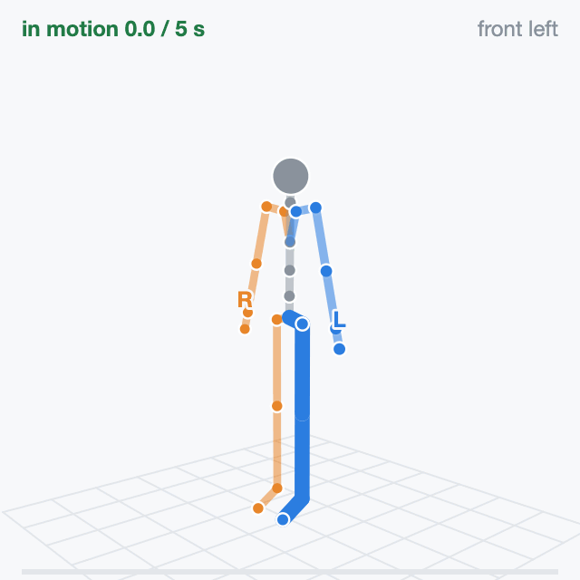
move 5 s “Left knee up.”
After the press, lift your left knee to about hip height and lower it. Right foot stays put.
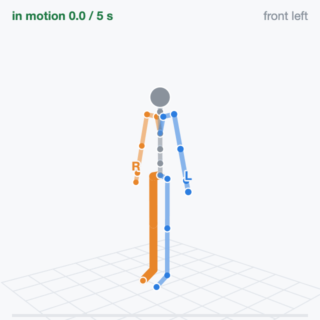
move 5 s “Right knee up.”
After the press, lift your right knee to about hip height and lower it. Left foot stays put.
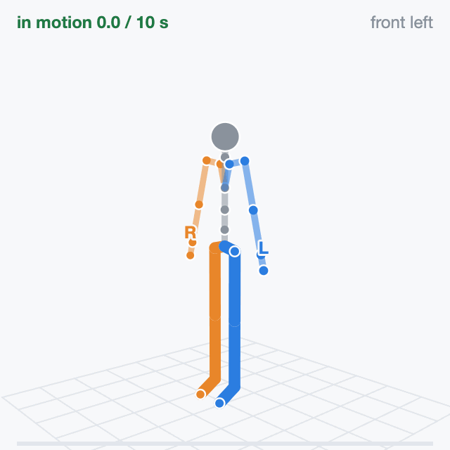
move 10 s “Squat twice, slowly.”
After the press, squat slowly and stand fully up, twice, same depth, weight on both legs.
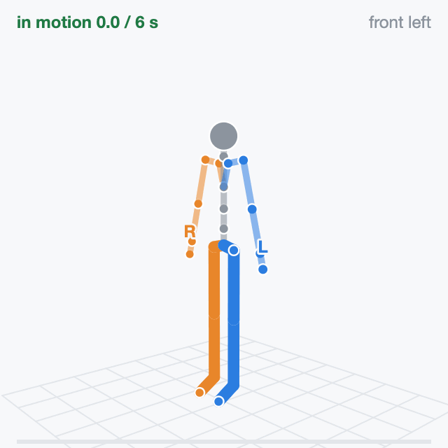
move 6 s “March in place.”
After the press, lift your knees in turn at a steady pace, without walking forward.
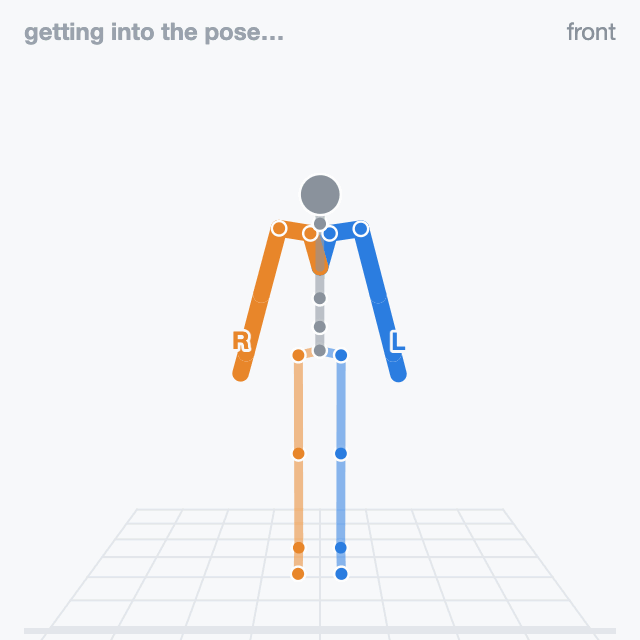
hold 6 s “T pose again. Hold.”
Same as step 2: arms straight out, level with the floor, palms down.
Rehearse#
Work in pairs. One person performs; the other stands at the screen and presses space. A suit without controllers in hand always needs the space bar.
Walk through the cards once before recording. The figures face you, so their left arm is on your right.
Clear the space to raise both arms overhead, squat and march without hitting anything.
Practice takes cost nothing. Every take gets its own directory; nothing is overwritten.
Record#
Set up the tools and connect the headset first (Set Up the Tools). Then, from the repository root:
src/python/isaaccapture/cts/full_body/capture/record.sh pico4u
The first argument names the device and the take. Open the capture panel at the address the run
prints: http://localhost:8081 unless that port was taken, or the [capture] headset: address
in the headset’s browser. Press Start recording when the performer is standing ready. The
script begins at the first frame with a valid joint. After 10 s without one, a red box lists what
to check; the take keeps running.
To record your own device, name the plugin, the vendor backend and its collection. The device
name must come first; record.sh rejects a leading option with its usage line. suitx,
suit_x_plugin, body.suit-x and suit_x are placeholders for a fictional Suit X;
replace each with your own:
src/python/isaaccapture/cts/full_body/capture/record.sh suitx \
--plugin suit_x_plugin \
--vendor body.suit-x \
--vendor-param collection_id=suit_x
--plugin NAMEis thename:in the plugin’splugin.yaml, found underinstall/plugins/once installed (cmake --install build).record.shlaunches it with that file’sargs:when you press Start recording, so do not start it yourself; do start your suit’s own streaming software first.--vendoris the id your backend registers.collection_idmust match the--collection-id=in the plugin’sargs:; omit it if both use the backend’s default. A mismatch records an empty take that looks like a device that never connected.
After step 10, “Done. You can stop now.” plays and the capture panel shows a label report:
the first rows check the file; the step rows re-derive seven of the steps from the pelvis,
ankles and hands (A-pose, neutral stance and march have none). One BAD step row means that
step was mistimed or performed wrongly: record again. Most rows BAD with numbers like
pelvis drops 0 cm means the joint stream is frozen: look at the device or plugin. A suit
that cannot track the hands flags LEFT_HAND and RIGHT_HAND invalid and gets one all steps BAD row, fewer than 24 valid joints and an n/a
arm-raise reach check instead: expected, not a fault. Press Ctrl+C when done. The take is in its
own directory:
~/isaaccapture-cts/pico4u_2026-03-04_101530/
├── pico4u_2026-03-04_101530-body.mcap the recording
├── pico4u_2026-03-04_101530-body.labels.json the step windows
├── pico4u_2026-03-04_101530-body.json device name, time, repo commit
└── pico4u_2026-03-04_101530-body.log the recorder's output
Keep the four files together and never rename them: the labels cannot be regenerated.
Check#
Point the checker at the .mcap inside its take directory, so it finds the labels file
beside it (to check on another machine, copy the whole directory):
src/python/isaaccapture/cts/full_body/checker/.venv/bin/python -m full_body_cts.cli \
~/isaaccapture-cts/<take>/<take>-body.mcap
The command prints the verdict and one
line per check, and exits 0 pass, 1 fail, 2 retake or 3 insufficient_data, or
4 when the check could not run; Verdicts says what each means. Add --json for the machine-readable
report, or run --list-checks alone to see all 38 checks. The output for a synthetic
reference take, shortened:
source full_body/oracle/fixtures/posture/posture_golden_full_script.mcap
frames 2050
topic full_body/full_body schema core.FullBodyPoseRecord
verdict PASS
[pass] schema.required_field_present.joints joints present on every pose
…
[pass] posture.arm_raise_range_of_motion both hands reach 89 deg above the shoulder
[pass] posture.march_ankle_antiphase the legs alternate (hip correlation -0.68)
[pass] posture.squat_knee_symmetry knees differ by 0.0 deg at depth
[pass] posture.squat_rep_repeatability the two reps agree to 0% of hip flexion
[pass] performance.squat_depth_sufficient the squat reaches 55 deg of hip flexion
[pass] performance.march_cadence_steady cadence holds at 0.90 Hz, step intervals varying 1%
[pass] performance.arm_raise_torso_stability the torso stays within 0.0 deg of upright
View#
The viewer needs the checker environment built with
full_body/checker/setup_env.sh --panel (Set Up the Tools).
src/python/isaaccapture/cts/full_body/checker/.venv/bin/python -m full_body_cts.panel \
~/isaaccapture-cts/<take>/<take>-body.mcap
It prints the same report, then serves port 8080, or the next free port; open the address it
prints. --host 0.0.0.0 opens it to other machines. The viewer replays the
skeleton (a joint that lost tracking turns red where it was last seen), plots frame rate and
valid joints over the take, and lists every check by group, with nine key signal and geometry
checks in a Decides the take folder on top. Its
package for submission button builds the archive you send: see Submit Your Results.

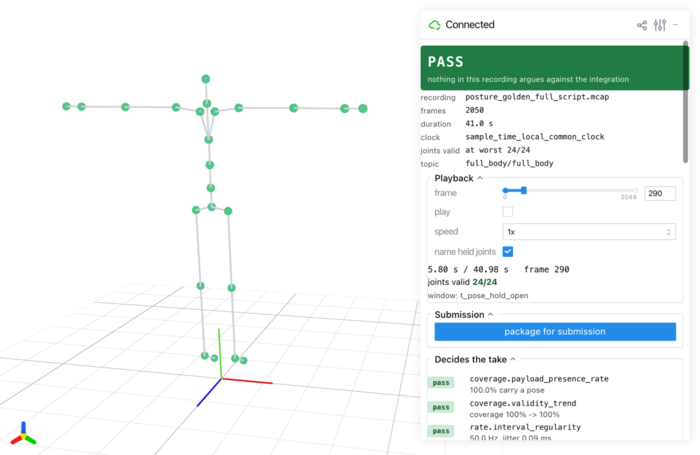
The viewer on a synthetic reference take, during the T-pose.#
Troubleshooting#
What you see |
What to do |
|---|---|
Start recording hangs after |
No headset is connected to CloudXR; connect it (Set Up the Tools) and the take goes on. Ctrl+C does not work here; close the terminal to get out. |
no joint has been valid yet, then the red No body data after 10 s box |
PICO: check body tracking, the trackers and their calibration
(Body Tracking). Own device: check the plugin is running and
|
A press does nothing |
It came outside ready when you are, or the key went to another window. Click the capture panel page, then press space. |
The capture panel says Spoken cues are off |
|
An error naming a Git LFS pointer |
Run |
the session did not open: …, on the capture panel |
Nothing was recorded. Required plugin … was not discovered: |
Verdict |
The checker found no labels. Run it on the recording in its take directory. |
More in full_body/README.md and full_body/checker/README.md.